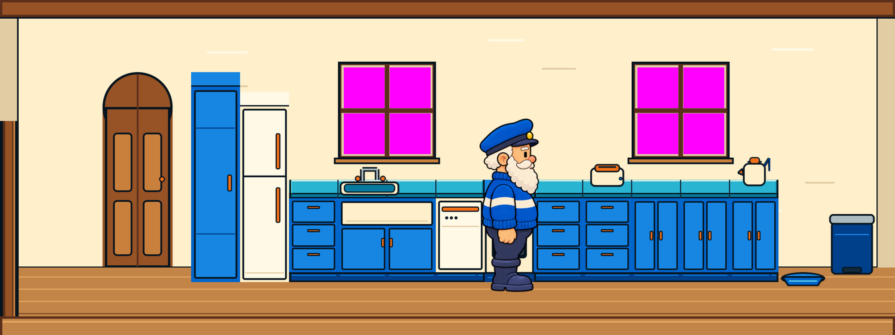
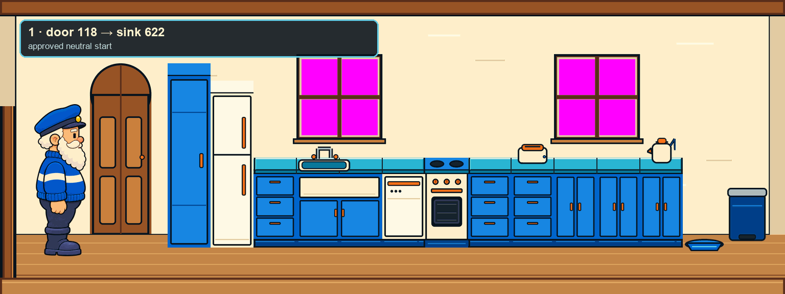
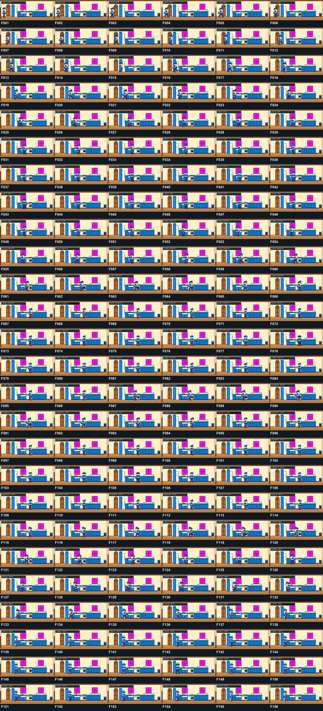
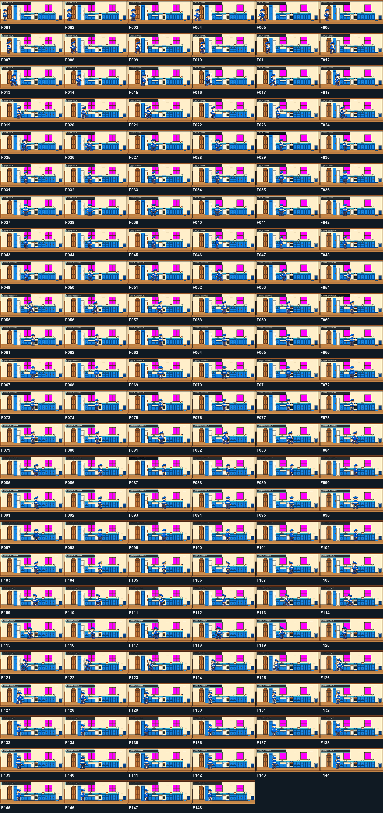
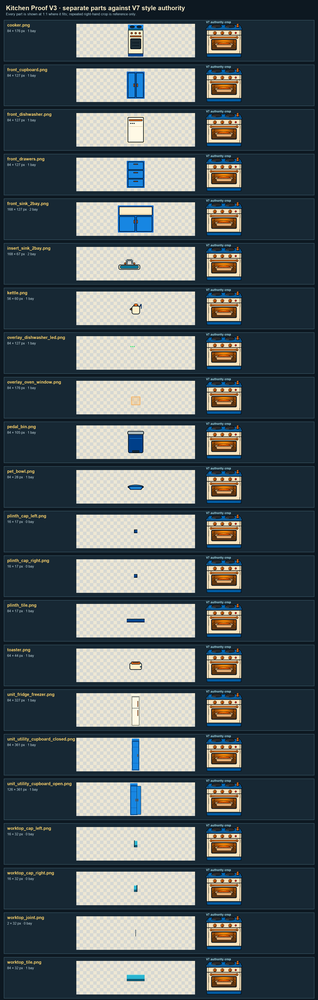

Room view · 1:1
2× nearest-neighbour

Tower scale · 1/4
Route arithmetic
| Leg | Current stop/error | D15 stop/error | D15 phase |
|---|---|---|---|
| Door 118 → sink 622 · 6 steps | 698 / +76 | 622 / 0 | F5 stop missing |
| Sink 622 → dishwasher 790 · 2 steps | 866 / +76 | 790 / 0 | F5 stop missing |
| Dishwasher 790 → cooker 874 · 1 step | 866 / −8 | 874 / 0 | existing phase valid |
| Cooker 874 → fridge 454 · 5 steps | 462 / +8 | 454 / 0 | existing phase valid |
D15 proves exact root positions, not an approved pose sequence for legs 1–2. Their F1 bridge pixels are labelled placeholders because the required F5-to-neutral bridge does not exist.
Current 38/38

D15 42/42 draft
Frame-by-frame evidence


Separate kit against V7

Mechanical evidence
PASS 39,200 exact-magenta pixels in the declared panes; zero near-magenta; zero item pixels above y=274 in window bays.
PASS Cooker/worktop top y=309; cooker/run plinth y=468–485; native Prime sole y=316 placed on room y=502.
PASS Sink recolour changes 271 room pixels, all within the sink insert rectangle; every stored part remains byte-identical.